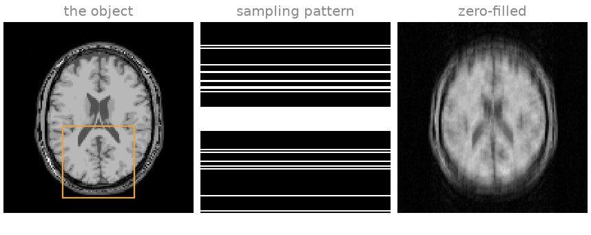
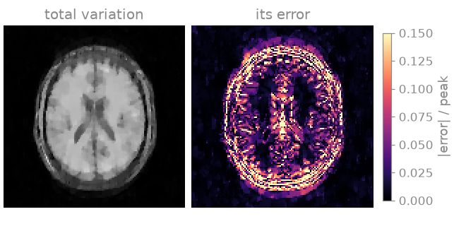
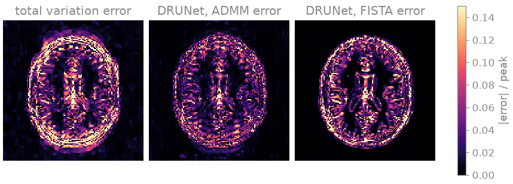
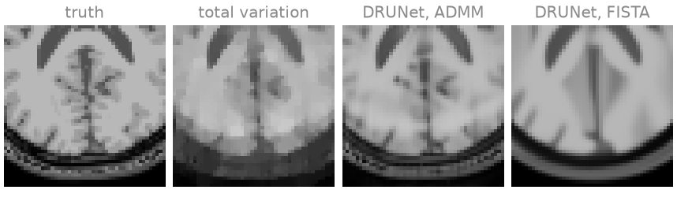
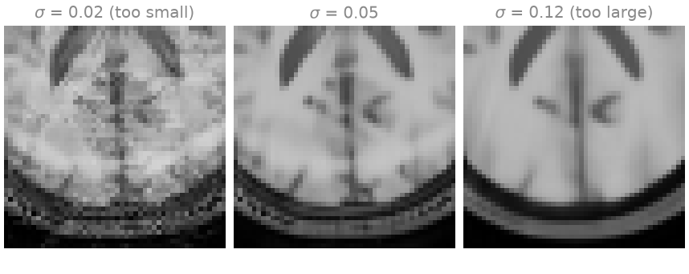

Note
Go to the end to download the full example code.
10. Plug-and-play reconstruction#
In lesson 9 the prior knowledge was a signal model; in lesson 5 it was an explicit penalty, a wavelet or total-variation term with a weight. In this lesson the prior is a pretrained denoising network, used in place of the penalty inside the same ADMM and FISTA iterations.
ADMM and FISTA use the penalty \(g\) only through its proximal operator,
This is the maximum a posteriori estimate of an image observed as \(v\) in white Gaussian noise, under the prior \(\exp(-g)\): the proximal operator is a denoiser. Plug-and-play (PnP) regularization [2] [3] replaces it by an image denoiser \(D_\sigma\), without an explicit \(g\). Each iteration alternates a data-consistency step on the measured k-space and a denoising step, and the denoiser’s noise level \(\sigma\) takes the role of the regularization weight.
The denoiser here is DRUNet [4], with the weights deepinv
distributes. It was trained to remove Gaussian noise from grayscale
photographs, not from MR images.
Learning objectives
Wrap a pretrained denoiser as
bartorch.priors.ImplicitPriorand hand it tobartorch.optim.admm()andbartorch.optim.fista()in place of abartorch.priorsterm.Compare the result with total variation on the same data, in the images, the error maps and an enlarged region.
Change the denoiser’s noise level and recognise under- and over-regularization.
Previous: 9. Nonlinear inversion for T2 mapping. Next: 11. Training an unrolled network, where you train the denoiser through the iteration instead of using a pretrained one.
The pretrained weights, about 125 MB, are downloaded the first time you run this. The network runs once per iteration, and on a CPU that is most of the run time.
Simulated acquisition#
The object is the BrainWeb slice [1] of lessons 2 and 5, a \(T_1\)-weighted spin-echo image, here at 128 by 128; the code that builds it is hidden. You acquire a quarter of the phase encodes (\(R = 4\)), drawn at random around a 16-line ACS block, with eight channels of BART’s analytical head coil and complex Gaussian noise of variance \(10^{-3}\). At that acceleration and noise level, both noise amplification and incoherent aliasing limit a reconstruction without a prior.
The SENSE operator uses the sensitivities the data were simulated with, so that the reconstructions below differ only in the prior. Lesson 3 is about estimating them.
import torch
import bartorch
import bartorch.tools as bt
from bartorch import linop, optim, priors
COILS = 8
ACCELERATION = 4
CALIBRATION = 16
sensitivities = bt.coils(t=bt.grid(D=(SIZE, SIZE, 1)), n=COILS)[:, 0]
sensitivities /= bartorch.rss(sensitivities, axes=(0,), keepdim=True)
pattern = simulate(ACCELERATION, CALIBRATION) # (y, 1)
A = linop.CartesianSense(sensitivities, (SIZE, SIZE), pattern=pattern)
data = bt.noise(A(image), n=1e-3, s=42) * pattern
zero_filled = A.H(data)

The zero-filled image, \(A^H y\), carries the incoherent aliasing of the random sampling, spread over the whole field of view, on top of the thermal noise. The orange box marks the region enlarged below.
Explicit penalty#
The reference is total variation under ADMM, as in lesson 5. Of the weights 0.002, 0.005, 0.01 and 0.02, 0.005 gives the lowest NRMSE against the phantom and 0.02 the highest SSIM; 0.01 is within 0.001 of that NRMSE with an SSIM close to the highest, and is used here.
total_variation = optim.admm(
data,
A,
priors.TotalVariation((-1, -2), 0.01),
maxiter=60,
rho=0.1,
)

Total variation removes most of the aliasing and the noise. At this weight it still leaves a blotchy texture across the brain and flattens gradual intensity changes into patches, the piecewise-constant images that total variation favours.
Denoiser as prior#
The network takes real planes of shape (n, channels, y, x); your image
is complex. ImplicitPrior bridges the two:
spatial=2 says the network works on 2D planes, and around each call the
prior scales the image to unit peak modulus, denoises its real and imaginary
parts as two grayscale planes, and scales the result back. So sigma is
in units of the image’s peak.
Nothing is trained here, so you evaluate the network without gradients. You run the same prior under ADMM and under FISTA.
from deepinv.models import DRUNet
ITERATIONS = 30
denoiser = DRUNet(in_channels=1, out_channels=1, pretrained="download")
denoiser = denoiser.eval()
prior = priors.ImplicitPrior(denoiser, sigma=0.05, spatial=2)
with torch.no_grad():
admm = optim.admm(data, A, prior, maxiter=ITERATIONS, rho=0.2)
fista = optim.fista(data, A, prior, maxiter=ITERATIONS)


Downloading: "https://huggingface.co/deepinv/drunet/resolve/main/drunet_deepinv_gray_finetune_26k.pth?download=true" to /home/runner/.cache/torch/hub/checkpoints/drunet_deepinv_gray_finetune_26k.pth
0%| | 0.00/125M [00:00<?, ?B/s]
0%| | 128k/125M [00:00<04:57, 439kB/s]
1%|▏ | 1.75M/125M [00:00<00:22, 5.76MB/s]
11%|█▏ | 14.2M/125M [00:00<00:02, 45.1MB/s]
31%|███ | 38.0M/125M [00:00<00:00, 108MB/s]
46%|████▌ | 56.8M/125M [00:00<00:00, 118MB/s]
56%|█████▌ | 69.8M/125M [00:01<00:00, 72.5MB/s]
72%|███████▏ | 89.2M/125M [00:01<00:00, 97.3MB/s]
82%|████████▏ | 102M/125M [00:01<00:00, 91.7MB/s]
94%|█████████▎| 117M/125M [00:01<00:00, 104MB/s]
100%|██████████| 125M/125M [00:01<00:00, 68.5MB/s]
The error maps are on one scale. Under ADMM the denoiser removes the noise and the aliasing and keeps the tissue boundaries, and its error map is darker inside the brain than the total-variation one. In the enlarged region the ventricles and the larger cortical folds are there, though the finest sulci are lost. Under FISTA, at the same \(\sigma\), the same denoiser gives a much smoother image: the cortical folds are gone, and its error runs along every tissue boundary.
The two iterations differ in the step before the denoiser. FISTA takes a gradient step of fixed length on the data term; ADMM solves a least-squares problem that holds the image to the data with weight \(\rho\). The denoiser is therefore applied to different images, and the same \(\sigma\) has a different effective strength. With a fixed \(\sigma\) neither iteration minimises a known objective, so the iteration count and \(\rho\) are part of the result, and you choose them as you would choose the weight of a penalty.
The numbers:
report(reconstructions)
zero-filled NRMSE 0.199 SSIM 0.482
total variation NRMSE 0.161 SSIM 0.754
DRUNet, ADMM NRMSE 0.103 SSIM 0.893
DRUNet, FISTA NRMSE 0.135 SSIM 0.898
SSIM ranks the over-smoothed FISTA image above the ADMM one. One figure of merit does not replace looking at the images.
Exercise: denoiser noise level#
\(\sigma\) is the strength of the prior. A \(\sigma\) below the noise level of the iterate leaves noise and aliasing in place; one above it removes image detail as well. Run ADMM at a smaller and a larger \(\sigma\) and compare with 0.05:
levels = (0.02, 0.05, 0.12)
sweep = {0.05: admm}
with torch.no_grad():
for sigma in (0.02, 0.12):
sweep[sigma] = optim.admm(
data,
A,
priors.ImplicitPrior(denoiser, sigma=sigma, spatial=2),
maxiter=ITERATIONS,
rho=0.2,
)
report({f"sigma {sigma:.2f}": sweep[sigma] for sigma in levels})

sigma 0.02 NRMSE 0.139 SSIM 0.734
sigma 0.05 NRMSE 0.103 SSIM 0.893
sigma 0.12 NRMSE 0.127 SSIM 0.886
At the smallest \(\sigma\) the noise and the aliasing remain as a mottled texture; at the largest the cortex is smoothed into uniform white matter and small structures disappear. The printed errors have their minimum at 0.05. You can repeat the sweep under FISTA and compare where its minimum lies.
DRUNet was trained neither on MR images nor on the residual aliasing an undersampled scan leaves, which is not white Gaussian noise. In lesson 11 you train a network for exactly that, inside the iteration.
As a spec#
What this lesson built, stated the way you would ask an agent for it:
Reconstruct a 2D Cartesian SENSE acquisition (128x128, 8 coils, R=4,
16-line ACS, known sensitivities) with bartorch, using a pretrained
denoiser as the prior. Build A with linop.CartesianSense. Load deepinv's
DRUNet (1 channel, pretrained weights) in eval mode and wrap it as
priors.ImplicitPrior(denoiser, sigma=0.05, spatial=2). Under
torch.no_grad, run optim.admm (30 iterations, rho=0.2) and optim.fista
(30 iterations) with it. Compare against optim.admm with
priors.TotalVariation over the last two axes (weight 0.01, 60
iterations, rho=0.1). Report NRMSE and SSIM of the magnitudes after a
global least-squares scale, and repeat ADMM at sigma 0.02 and 0.12.
References#
Total running time of the script: (0 minutes 51.929 seconds)